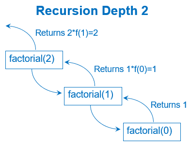

Recursion
Must Have
- base case
- recursive call
- movement toward the base case
- remember to
return
Factorial Shape
def factorial(n):
if n == 1:
return 1
else:
return n * factorial(n - 1)
Tracing
- frame expansion
- trace tree diagram
- arrows down go first
- arrows up are returns

Debugging
If it never reaches the base case, it keeps recursing until maximum recursion depth.
Add print(n) at the start to see whether the input is moving toward the base case.
Checkpoint Practice Patterns
Power:
def power(base, exp):
if exp == 0:
return 1
return base * power(base, exp - 1)
Reverse a string:
def reverse_string(s):
if len(s) == 0:
return ""
return s[-1] + reverse_string(s[:-1])
Sum a list:
def list_sum(arr):
if len(arr) == 0:
return 0
return arr[0] + list_sum(arr[1:])
Find maximum:
def find_max(arr):
if len(arr) == 1:
return arr[0]
rest_max = find_max(arr[1:])
if arr[0] > rest_max:
return arr[0]
return rest_max
Count students who passed:
def count_passes(students, index):
if index == len(students):
return 0
if students[index][1] >= 50:
return 1 + count_passes(students, index + 1)
return count_passes(students, index + 1)
Palindrome:
def is_palindrome(s):
if len(s) <= 1:
return True
if s[0] != s[-1]:
return False
return is_palindrome(s[1:-1])
Pattern:
- Base case handles the smallest input.
- Recursive call uses a smaller input.
- Combine the current item with the recursive answer.